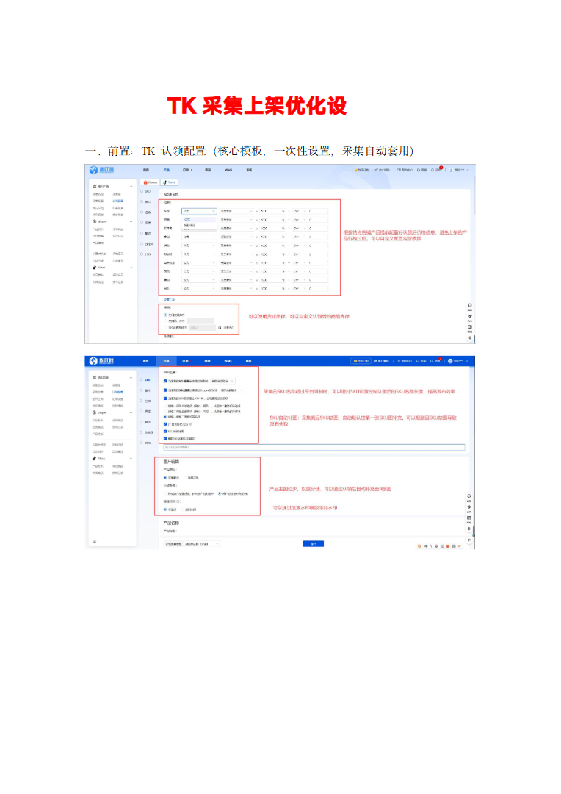
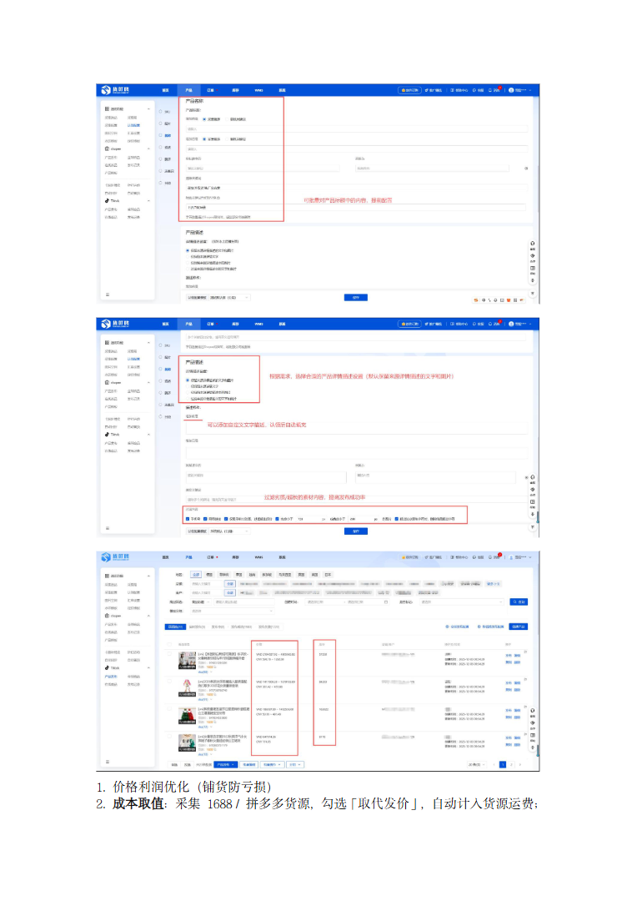
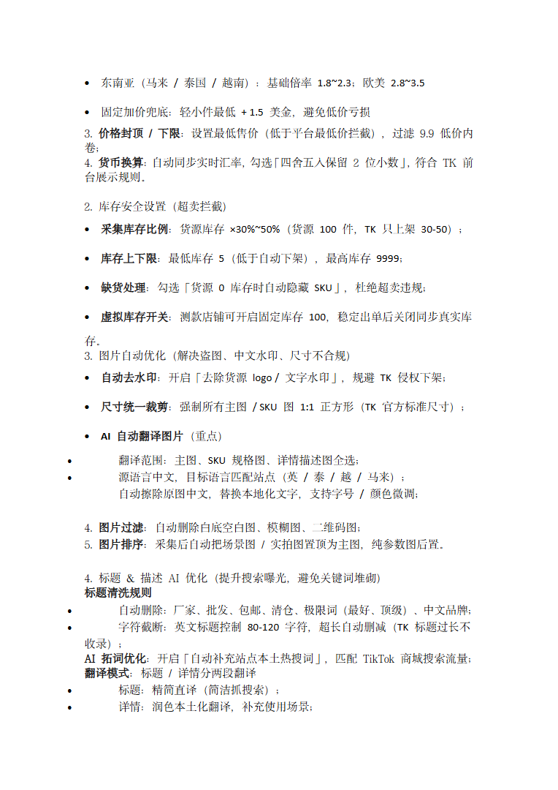
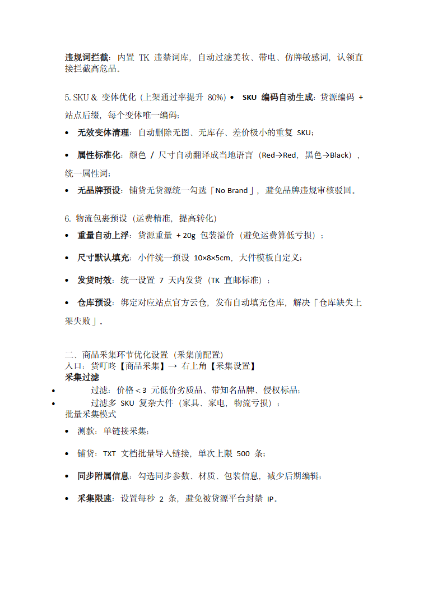
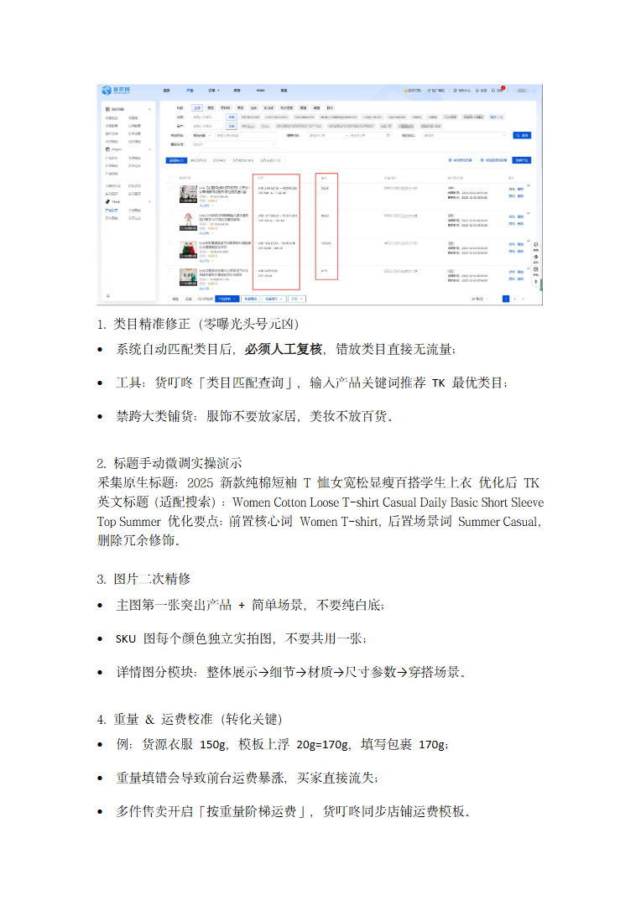
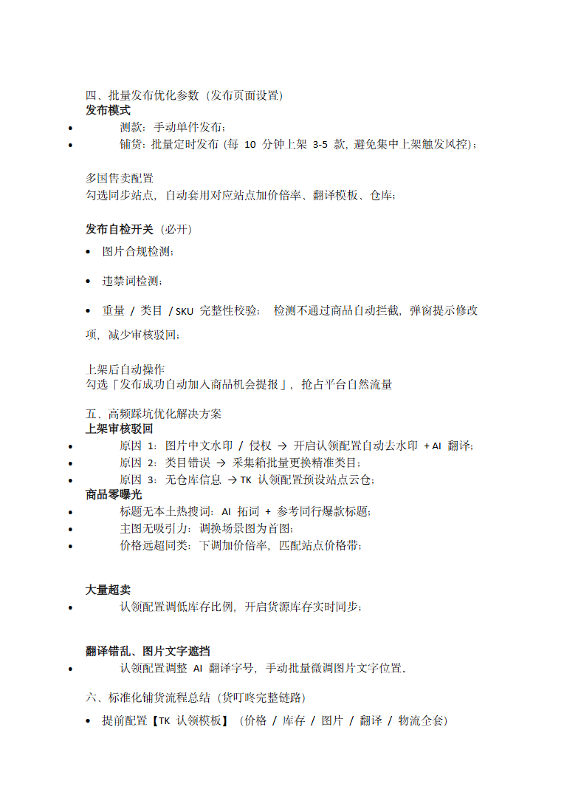
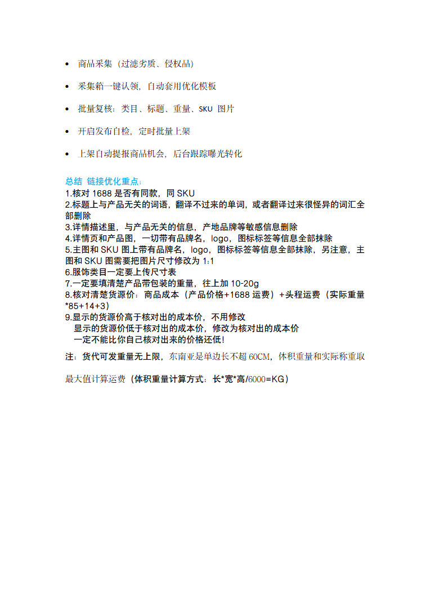

第 1 页

查看文字
TK采集上架优化设
一、前置：TK认领配置（核心模板，一次性设置，采集自动套用）
第 2 页

查看文字
1.价格利润优化（铺货防亏损）
2.成本取值：采集1688/拼多多货源，勾选「取代发价」，自动计入货源运费；
第 3 页

查看文字
东南亚（马来/泰国/越南）：基础倍率1.8~2.3；欧美2.8~3.5
固定加价兜底：轻小件最低+1.5美金，避免低价亏损
3.价格封顶/下限：设置最低售价（低于平台最低价拦截），过滤9.9低价内
卷；
4.货币换算：自动同步实时汇率，勾选「四舍五入保留2位小数」，符合TK前
台展示规则。
2.库存安全设置（超卖拦截）
采集库存比例：货源库存×30%~50%（货源100件，TK只上架30-50）；
库存上下限：最低库存5（低于自动下架），最高库存9999；
缺货处理：勾选「货源0库存时自动隐藏SKU」，杜绝超卖违规；
虚拟库存开关：测款店铺可开启固定库存100，稳定出单后关闭同步真实库
存。
3.图片自动优化（解决盗图、中文水印、尺寸不合规）
自动去水印：开启「去除货源logo/文字水印」，规避TK侵权下架；
尺寸统一裁剪：强制所有主图/SKU图1:1正方形（TK官方标准尺寸）；
AI自动翻译图片（重点）
翻译范围：主图、SKU规格图、详情描述图全选；
源语言中文，目标语言匹配站点（英/泰/越/马来）；
自动擦除原图中文，替换本地化文字，支持字号/颜色微调；
4.图片过滤：自动删除白底空白图、模糊图、二维码图；
5.图片排序：采集后自动把场景图/实拍图置顶为主图，纯参数图后置。
4.标题&描述AI优化（提升搜索曝光，避免关键词堆砌）
标题清洗规则
自动删除：厂家、批发、包邮、清仓、极限词（最好、顶级）、中文品牌；
字符截断：英文标题控制80-120字符，超长自动删减（TK标题过长不
收录）；
AI拓词优化：开启「自动补充站点本土热搜词」，匹配TikTok商城搜索流量；
翻译模式：标题/详情分两段翻译
标题：精简直译（简洁抓搜索）；
详情：润色本土化翻译，补充使用场景；
第 4 页

查看文字
违规词拦截：内置TK违禁词库，自动过滤美妆、带电、仿牌敏感词，认领直
接拦截高危品。
5.SKU&变体优化（上架通过率提升80%）SKU编码自动生成：货源编码+
站点后缀，每个变体唯一编码；
无效变体清理：自动删除无图、无库存、差价极小的重复SKU；
属性标准化：颜色/尺寸自动翻译成当地语言（Red→Red，黑色→Black），
统一属性词；
无品牌预设：铺货无货源统一勾选「NoBrand」，避免品牌违规审核驳回。
6.物流包裹预设（运费精准，提高转化）
重量自动上浮：货源重量+20g包装溢价（避免运费算低亏损）；
尺寸默认填充：小件统一预设10×8×5cm，大件模板自定义；
发货时效：统一设置7天内发货（TK直邮标准）；
仓库预设：绑定对应站点官方云仓，发布自动填充仓库，解决「仓库缺失上
架失败」。
二、商品采集环节优化设置（采集前配置）
入口：货叮咚【商品采集】→右上角【采集设置】
采集过滤
过滤：价格＜3元低价劣质品、带知名品牌、侵权标品；
过滤多SKU复杂大件（家具、家电，物流亏损）；
批量采集模式
测款：单链接采集；
铺货：TXT文档批量导入链接，单次上限500条；
同步附属信息：勾选同步参数、材质、包装信息，减少后期编辑；
采集限速：设置每秒2条，避免被货源平台封禁IP。
第 5 页

查看文字
1.类目精准修正（零曝光头号元凶）
系统自动匹配类目后，必须人工复核，错放类目直接无流量；
工具：货叮咚「类目匹配查询」，输入产品关键词推荐TK最优类目；
禁跨大类铺货：服饰不要放家居，美妆不放百货。
2.标题手动微调实操演示
采集原生标题：2025新款纯棉短袖T恤女宽松显瘦百搭学生上衣优化后TK
英文标题（适配搜索）：WomenCottonLooseT-shirtCasualDailyBasicShortSleeve
TopSummer优化要点：前置核心词WomenT-shirt，后置场景词SummerCasual，
删除冗余修饰。
3.图片二次精修
主图第一张突出产品+简单场景，不要纯白底；
SKU图每个颜色独立实拍图，不要共用一张；
详情图分模块：整体展示→细节→材质→尺寸参数→穿搭场景。
4.重量&运费校准（转化关键）
例：货源衣服150g，模板上浮20g=170g，填写包裹170g；
重量填错会导致前台运费暴涨，买家直接流失；
多件售卖开启「按重量阶梯运费」，货叮咚同步店铺运费模板。
第 6 页

查看文字
四、批量发布优化参数（发布页面设置）
发布模式
测款：手动单件发布；
铺货：批量定时发布（每10分钟上架3-5款，避免集中上架触发风控）；
多国售卖配置
勾选同步站点，自动套用对应站点加价倍率、翻译模板、仓库；
发布自检开关（必开）
图片合规检测；
违禁词检测；
重量/类目/SKU完整性校验；检测不通过商品自动拦截，弹窗提示修改
项，减少审核驳回；
上架后自动操作
勾选「发布成功自动加入商品机会提报」，抢占平台自然流量
五、高频踩坑优化解决方案
上架审核驳回
原因1：图片中文水印/侵权→开启认领配置自动去水印+AI翻译；
原因2：类目错误→采集箱批量更换精准类目；
原因3：无仓库信息→TK认领配置预设站点云仓；
商品零曝光
标题无本土热搜词：AI拓词+参考同行爆款标题；
主图无吸引力：调换场景图为首图；
价格远超同类：下调加价倍率，匹配站点价格带；
大量超卖
认领配置调低库存比例，开启货源库存实时同步；
翻译错乱、图片文字遮挡
认领配置调整AI翻译字号，手动批量微调图片文字位置。
六、标准化铺货流程总结（货叮咚完整链路）
提前配置【TK认领模板】（价格/库存/图片/翻译/物流全套）
第 7 页

查看文字
商品采集（过滤劣质、侵权品）
采集箱一键认领，自动套用优化模板
批量复核：类目、标题、重量、SKU图片
开启发布自检，定时批量上架
上架自动提报商品机会，后台跟踪曝光转化
总结链接优化重点：
1.核对1688是否有同款，同SKU
2.标题上与产品无关的词语，翻译不过来的单词，或者翻译过来很怪异的词汇全
部删除
3.详情描述里，与产品无关的信息，产地品牌等敏感信息删除
4.详情页和产品图，一切带有品牌名，logo，图标标签等信息全部抹除
5.主图和SKU图上带有品牌名，logo，图标标签等信息全部抹除，另注意，主
图和SKU图需要把图片尺寸修改为1:1
6.服饰类目一定要上传尺寸表
7.一定要填清楚产品带包装的重量，往上加10-20g
8.核对清楚货源价：商品成本（产品价格+1688运费）+头程运费（实际重量
*85+14+3）
9.显示的货源价高于核对出的成本价，不用修改
显示的货源价低于核对出的成本价，修改为核对出的成本价
一定不能比你自己核对出来的价格还低！
注：货代可发重量无上限，东南亚是单边长不超60CM，体积重量和实际称重取
最大值计算运费（体积重量计算方式：长*宽*高/6000=KG）